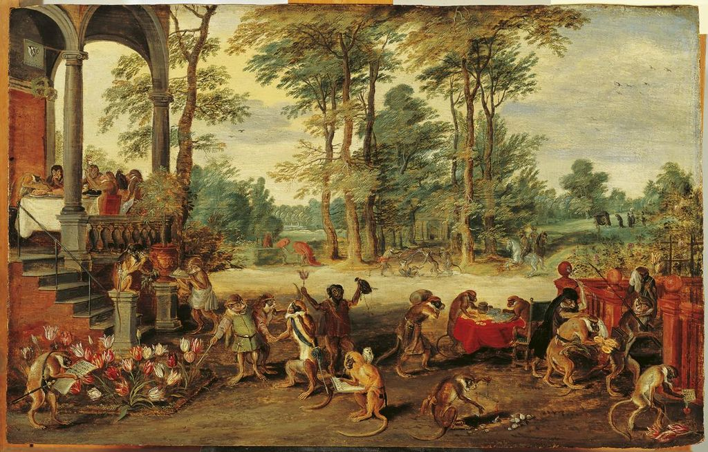

作品名 「チューリップマニアの風刺」
花言葉 「思いやり」「博愛」
チューリップ
「思いやり」
色を問わず、チューリップ全体の花言葉は「思いやり」「博愛」です。これらの花言葉には、愛にまつわるとある伝説が関係しています。オランダでは、3人の騎士から求愛を迫られた少女が女神フローラに自分を花にして欲しいと願い、それぞれからプレゼントされた王冠が花に、剣が葉に、黄金が球根になり、チューリップが生まれたと言われています。
チューリップマニアの風刺
ヤン・ブリューゲル・ザ・ヤンガー
17世紀オランダの現代服を着た猿たちが、チューリップの取引をしている様子を描いています。希少なチューリップの球根を中心としたバブル経済「チューリップ・バブル」時代の投資家たちを風刺したもの。ブリューゲルはチューリップの投資家を脳天気な猿と揶揄しているだけでなく、一輪の花にそこまで賭けることの愚かさを教えてくれる作品である。
| 作品名 | チューリップマニアの風刺 |
| 作者 | ヤン・ブリューゲル・ザ・ヤンガー |
| 制作年 | 1640年頃 |
| 種類 | パネルに油彩 |
| 寸法 | 12.2×19.2cm |
| 所蔵 | フランス・ハルス美術館 |